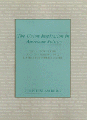

A sweeping reinterpretation of New Deal liberalism and industrial relations
A sweeping reinterpretation of New Deal liberalism and industrial relations


 A sweeping reinterpretation of New Deal liberalism and industrial relations
A sweeping reinterpretation of New Deal liberalism and industrial relations

|  |
The Union Inspiration in American PoliticsThe Autoworkers and the Making of a Liberal Industrial OrderStephen Ambergcloth EAN: 978-1-56639-189-4 (ISBN: 1-56639-189-X) |
The New Deal made organized labor a primary Democratic party coalition partner in national politics. For the next twenty-five years, unions were a part of a virtuous circle of rising wages and benefits, economic growth, steady profits, and consensus on social reform. The AFL CIO was able to influence the outcome of presidential elections and command attention in Congress. Today that world is in ruins. Stephen Amberg analyzes what caused the breakdown.
With the significant changes in the labor force and the international economy in the 1960s, New Deal industrial relations no longer ended conflicts in the factories but blocked new strategies to stay competitive and to sustain the gains won by the working class. This new challenge to Democratic coalition leaders set the stage for a return of free market ideologies and conservative political leaders who said that government and labor were the causes of crisis. The flaw in the criticism was the claim that reform based on managerial self-interest was the only alternative. Instead, this book argues, the alternative path of worker participation could have been followed and could still be followed today.
Amberg's examination of auto industrial relations reveals that Democrats helped create and then undermine the modern labor movement. He traces the auto industry's development from a virtual dictatorship in the 1920s to pluralist democracy in the 1930s and 1940s, with the successful unionization drives of the United Auto Workers Union, to the period of crisis that began in the late 1970s. During this time, the industry was converted from the single largest generator of jobs and wealth, a paradigm of efficiency and consensual labor-management relations, to a symbol of industrial bureaucracy and competitive failure. Firms like Studebaker that originally followed promising but unorthodox market strategies and labor relations vanished into bankruptcy. Workers and their unions were unable to gain political support for participation in decision making about industrial restructuring.
Excerpt available at www.temple.edu/tempress
"The following chapters present a case study of industrial relations in the automobile industry. The object is two-fold: first, to look clearly at what labor's role really was in the New Deal system of politics and to close the gap between near unanimity about labor's centrality to politics from the 1930s to the 1980s and the disagreement about labor's place in its breakdown; and second, through examination of one core element within the system, to illuminate the transformations of the broader system of politics…
"If the United States expects to continue to compete successfully in manufacturing, then the automobile industry must continue to be a leading employer, source of productivity, and market for new technologies. And it is in the automobile industry that some of the most concerted efforts at work reform are occurring. But these reforms need public support to prevent them from succumbing to managerial preoccupations with control and short-term profit and to defensive union tactics. The Democratic party has failed to develop a programmatic consensus on the microeconomic issues that are the heart of governing the economy today. The party regained the presidency in unusual electoral circumstances committed to a more aggressive trade policy and a fiscal stimulation program, but it was unprepared to establish a new framework for enhanced democracy that will enable it to serve its historical labor constituency as it seeks to improve American industrial performance."
From the Introduction
Preface
List of Abbreviations
Introduction: Liberal Democracy and Industrial Order
1. The New Deal as System and Project
2. Creating a Low-Capacity Industrial Order
3. The Strategic Vision of Unionism
4. Settling for Pluralism
5. Creating a Special Interest Group
6. Boundary Maintenance at Studebaker
7. The Liberal Democratic Reform Cycle
8. Reconfiguring Work and Politics
Notes
Index
Stephen Amberg is Associate Professor of Political Science at the University of Texas at San Antonio.
Political Science and Public Policy
Labor Studies and Work
Labor and Social Change, edited by Paula Rayman and Carmen Sirianni.
Labor and Social Change, edited by Paula Rayman and Carmen Sirianni, includes books on workplace issues like worker participation, quality of work life, shorter hours, technological change, and productivity, as well as union and community organizing and ethnographies of particular occupations.
© 2015 Temple University. All Rights Reserved. This page: http://www.temple.edu/tempress/titles/1119_reg.html.